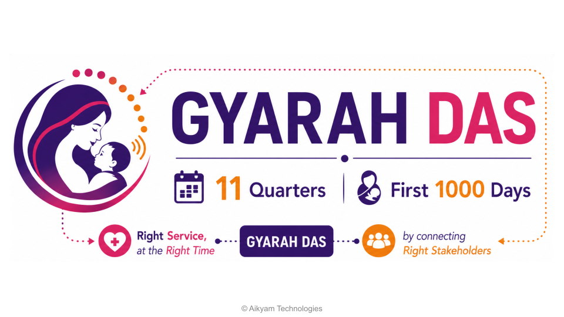

ग्यारह दास — रूपा देवी

शुरू करने के लिए बटन दबाएं
शुरू करें
लाभार्थी प्रोफ़ाइल
नाम
—
उम्र
—
मोबाइल
—
गाँव
—
दर्ज विवरण
बातचीत के दौरान विवरण यहाँ दिखाई देंगे…
साझा किए गए संपर्क
कॉल समाप्त करें
गूगल क्रोम का उपयोग करें और माइक्रोफोन की अनुमति दें। हेडफोन का उपयोग उचित है।
बस स्वाभाविक रूप से बोलें — रूपा देवी को पता चल जाएगा जब आप बोलना बंद कर देंगी।